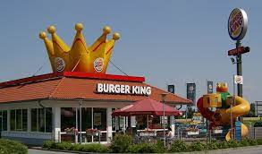

Now, we get to day two. Long story short, we got kicked out of our hotel. So, we were afforded a limited amount of time to pack our stuff and find somewhere to go. This wasnt easy for us, being that we weren't familiar with Austin at all. Another hurdle in the way was the fact that there was a big music festival going on so most of the hotels didn't have many rooms remainging. Long story even shorter, We spent a few hours at a Burger King with all of our luggage and equptment on our backs calling hotels to stay at and we ended up finding one. We all sruvived the Austin heat and lived happily ever after. 
My name is Jacob, and my passion is music. A few years ago, my passion took me adn a couple friends to SXSW music festival. We were there to perform and enjoy performances for a few days. Overall the experience was hectic but enjoyable
Not everything went perfectly, and I'll get to that later but day one was great. On our first day, we performed. Performing was fun, it was our first time in Austin and everybody was really friendly and engaged with the artists.